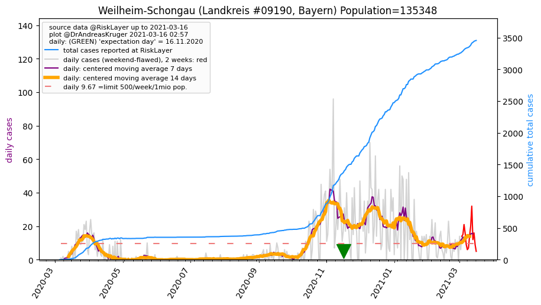
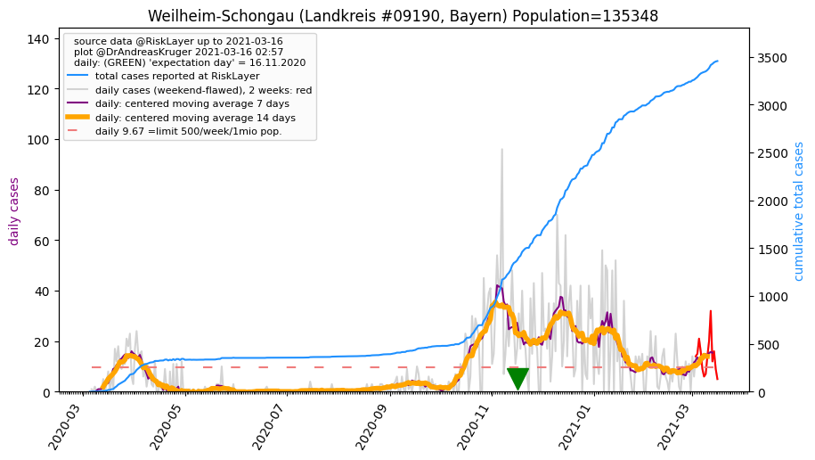

")
")
")

")
")
")
")
| Bad Tölz-Wolfratshausen_LK (0.0 km) |
Miesbach_LK (24.5 km) |
Garmisch-Partenkirchen_LK (32.7 km) |
| Weilheim-Schongau_LK (33.3 km)  |
Starnberg_LK (34.4 km) |
München_LK (40.1 km) |
| München_KS (47.6 km) |
Rosenheim_KS (48.6 km) |
All plots are regenerated with new data every night. Beware this temporary hotspot is an experimental page - it might get removed, so please do not link to it. Instead link to project http://tiny.cc/cov19de.